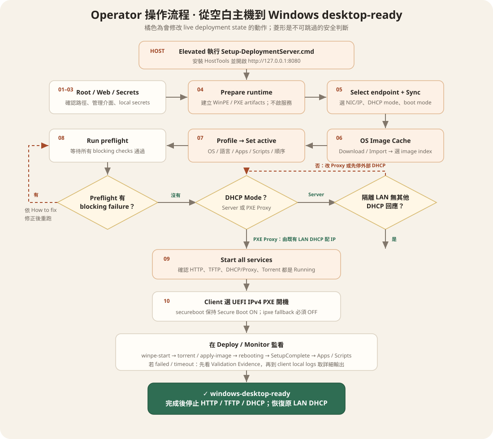
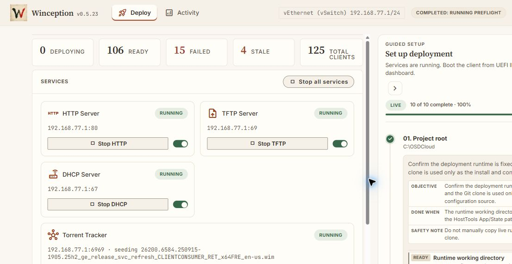
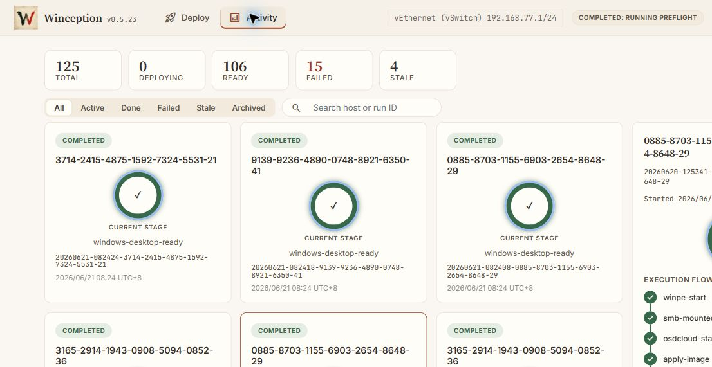
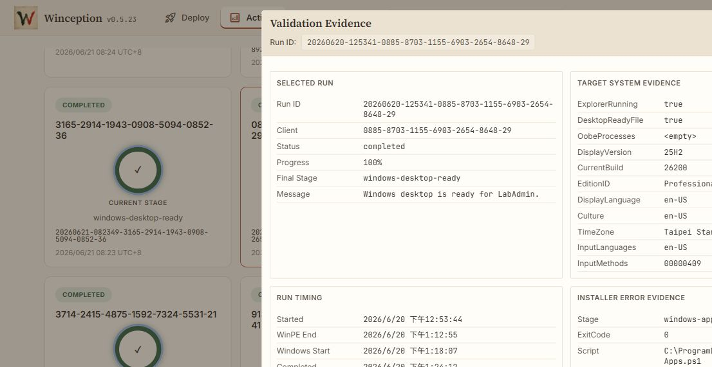
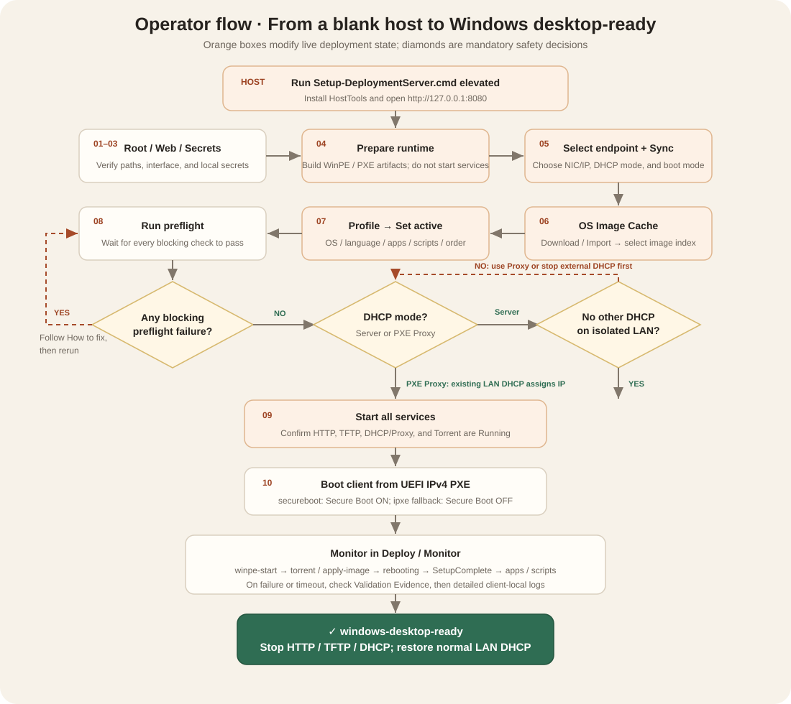

實體 client
Web Console 選定的實體 NIC / IP，從 client 的 UEFI IPv4 PXE 開機。只有這條路徑可作為實體設備可部署的證據。
Operations & Engineering Manual · v0.6.0
給部署技術人員與現場操作員的單頁指南：從 PXE 開機技術、Web Console 點選流程、Torrent P2P 映像分發，到 windows-desktop-ready 的成功判定與故障排除。
00 · Scope
Web Console 選定的實體 NIC / IP，從 client 的 UEFI IPv4 PXE 開機。只有這條路徑可作為實體設備可部署的證據。
快速驗證 WinPE、OS apply、OOBE、SetupComplete、Apps / Scripts 與 callback。VM 成功不代表實體 LAN endpoint 已準備好。
C:\OSDCloud\Win11-Lab 與舊 ISO 僅是歷史證據。不要把 ISO、USB 或舊 workspace 恢復成 active path。
config\osdcloud-console.json。
01 · Quick start
以下假設 HostTools 已安裝、runtime 已準備。新主機請先從 elevated shell 執行 Setup-DeploymentServer.cmd。
C:\OSDCloud\HostTools\Open-WebConsole.cmd，瀏覽 http://127.0.0.1:8080。windows-desktop-ready，且 Apps / Scripts 沒有 error / timeout，才算完成。
02 · Architecture
Winception 是 Node.js ESM Web 管理服務加上 PowerShell／OSDCloud deployment pipeline。控制面只負責編排；PXE boot、OS image、status callback 與 client local logs 各有獨立責任。

| 技術／元件 | 角色 | 如何交互 | 在 UI 的呈現 |
|---|---|---|---|
Web Console:8080 | 技術人員的控制面。 | 讀取 live config/state，呼叫 ServiceController 執行 prepare、sync、publish、preflight、start/stop。 | Deploy、Activity、Guided setup、Console。 |
DHCP / PXE ProxyUDP 67 | 分配 client IP，或只注入 PXE boot option。 | Server mode 回 lease＋router＋DNS＋boot file；Proxy mode 不分 IP。 | Endpoint settings、DHCP service card、System Log。 |
TFTPUDP 69 | 提供最早期 boot files。 | Secure Boot path 提供 signed Windows Boot Manager、BCD、boot.sdi、boot.wim；iPXE path 提供 snponly.efi。 | TFTP service card；pxe-tftp.log 顯示 RRQ / SENT / MISS。 |
HTTP media/statusTCP 80 | iPXE fallback boot、metadata/control、client status callback。 | iPXE 下載 boot script/wimboot；client POST deployment events 與安全 telemetry。 | HTTP service card、Client Fleet、Validation Evidence、System Log。 |
| OSDCloud / WinPE | 分割磁碟、套用 Windows WIM、準備 OOBE / SetupComplete。 | 讀 active metadata，取得並驗證 image，透過 DISM 套用 Windows，寫入 handoff metadata。 | winpe-start、apply-image、osdcloud-finished。 |
SMBOSDCloudiPXE | 提供 authoritative runtime image/metadata 與 direct fallback。 | WinPE 以 local deployment account 唯讀掛載為 Z:；不把 WIM 由 public HTTP 再下載一次。 | smb-mounted 與 Validation Evidence 的 image destination。 |
BitTorrent6969 / 6881 | 多 client 同時部署時分散 WIM 傳輸負載。 | tracker 讓 peers 發現彼此；Node super-seeder 供起始 pieces；WinPE aria2c 邊下載邊上傳。 | Torrent Tracker card：wave、host ratio、coverage、clients、rates、ETA、receivers。 |
| SetupComplete + finalizer | Windows 端客製化與 post-logon Apps / Scripts。 | SetupComplete 只準備任務；必要 reboot 後由 SYSTEM task 依 profile 順序執行並更新安全 viewer state。 | windows-setupcomplete-*、windows-apps-*、全螢幕進度 viewer。 |
| Status / Evidence | 每台 client、每個 run 的狀態來源。 | JSON events 寫入 per-run evidence；截圖 best effort；完整 installer output 留 client。 | Activity card、Execution Flow、Validation Evidence、Console。 |
03 · Boot & DHCP modes
securebootDHCP 指向 Microsoft-signed bootmgfw.efi。Windows Boot Manager 透過 TFTP 讀 BCD、boot.sdi 與 boot.wim。Client Secure Boot 可保持 ON。
ipxeDHCP 指向未簽章的 snponly.efi，iPXE 再透過 HTTP wimboot 進 WinPE。Client Secure Boot 必須 OFF。
| DHCP mode | 誰分配 IP | Winception 做什麼 | 何時使用 | 禁止事項 |
|---|---|---|---|---|
| DHCP Server | Winception | 回 OFFER / ACK、lease、router、DNS、PXE boot option。 | 隔離 deployment LAN，沒有其他 DHCP responder。 | 不能與同網段既有 DHCP 同時對測試 client 回答。 |
| PXE Proxy | 現有 LAN DHCP | 只對 PXE client 提供 boot server / boot file，不配置 IP。 | 共用 LAN 必須保留既有 DHCP 時。 | 不要把 Proxy 當成 lease server；先確認現有 DHCP 可正常配 IP。 |
04 · Boundaries
HostTools\AppHostTools\StateC:\OSDCloud；包含 Media、PXE roots、status、logs。只能由產品 workflow 管理，不直接 patch/copy。C:\Windows\Temp\osdcloud-logs。Apps / Scripts 的 stdout、stderr、exception 與逐步診斷留在 client。C:\ProgramData\OSDCloud\deployment-progress.json。只供 viewer；不含 secrets、raw command line 或完整 error output。05 · Safety gates
Selected NIC/IP、prefix、lease range、router、HTTP base、SMB share 必須屬於同一條本次要使用的 deployment path。
Runtime Readiness ready；缺 artifact 時先 Prepare runtime。不要把 size-mismatch 解讀成服務已運行。
Active profile 有 deployable WIM、正確 image index、language/time zone 與有序 Apps / Scripts；manifest 不是 stale。
所有 blocking failure 都要修正。Disconnected NIC 可是 warning；Duplicate IP、Disabled NIC、wrong prefix 是 blocker。
Server mode 前確認隔離 LAN 沒有其他 DHCP；否則改 Proxy mode。這是操作員責任，preflight 不能替你證明。
同一時間只允許一個 Web Console 或 headless process 控制 UDP 67/69、TCP 80。不要並行啟動。
06 · Guided Setup
右側 Guided setup 是 10 步 live checklist。已完成的項目仍應在每次實體部署前重新核對，尤其是 endpoint、profile 與 preflight。
確認 runtime root 在 Git clone 與 HostTools 外；標準環境使用 C:\OSDCloud。
Web 管理介面預設只聽 127.0.0.1:8080。它與 client 使用的 service IP 不同。
填 Windows local account；系統保存於 ignored HostTools State。畫面、log、文件與 screenshots 不應出現 plaintext。
按 Prepare runtime，確認摘要後執行。此長任務準備 ADK/WinPE/iPXE/boot artifacts，但不啟 HTTP/TFTP/DHCP，也不下載未選 client software。
點上方 Endpoint → 選本次 NIC / IPv4 → 選 DHCP mode 與 Client Boot Mode → Sync endpoint。
點 OS Image。選官方 catalog download，或 Local Import ISO/ESD/WIM；檢查 DISM image list，選 Windows 11 Pro Retail 正確 index，匯出單一 deployable WIM。
點 Profile → 新增／編輯 profile → 選 OS image、display language、locale、input language、time zone、Apps / Scripts 及順序 → Set active / publish。
按 Run preflight。逐條輸出會出現在 Console；Summary 顯示 blocker 時，依 tooltip 的 How to fix 修正後重跑。
確認 DHCP 安全條件後按 Start all services。四張服務卡應是 Running；Torrent idle 是正常，client 加入後才形成 wave。
Client 選 UEFI IPv4 PXE。第一個 winpe-start 出現後，該次 deployment 會在 Activity 建立獨立 run。

07 · Client deployment
secureboot 保持 Secure Boot ON；ipxe fallback 才關閉。windows-apps-finished、windows-setupcomplete-finished 與最終 windows-desktop-ready 為準。
08 · Monitoring


看 endpoint、service states、Runtime Readiness、Preflight Summary、Torrent wave 與全 fleet 統計。
看每個 run 的 stage、進度、start time、completed/failed/stale，以及 Execution Flow。
對 selected run 讀 per-run history。舊 run 只代表 previous evidence，不是現在正在部署。
reporter-stop 是失敗嗎？不是。它是 WinPE reporter 在 reboot handoff 前的預期停止；UI 應把它映射到 rebooting。只有長時間沒有後續 Windows event、最終 stale / failed 時才需要調查。
不是。Stopped / idle 是 neutral state。紅色只應代表 blocked / failed；部署窗口外服務停止是正確狀態。
09 · Torrent P2P
多台 client 同時從 host 讀完整 WIM 會讓 host 磁碟與網路成為瓶頸。Winception 預設讓 WinPE 的 aria2c.exe 加入同一 swarm：host 只提供起始 pieces，clients 邊下載邊把 pieces 傳給其他 peers。
Origin batch 依 slot 取得互斥 i mod n piece stripe。晚到 client 在前批仍在線時可成為 peer-only。
正常 wave 的 host 上傳預算約為 1.15× WIM；其餘流量應由 peers 互傳。
三分鐘無 aggregate progress 才進可見 emergency host fallback；30 秒無 non-host heartbeat 才結束 wave。
| 欄位 | 判讀 | 正常狀態 |
|---|---|---|
| Wave / batch | 目前收集窗與 distribution wave。 | 無 client 時 - / idle。 |
| Host served ratio | Host seeder 供應量 ÷ WIM size。 | 穩定多 client wave 應接近或低於 1.15×；emergency fallback 例外。 |
| Swarm coverage | Fleet 已持有 pieces 的覆蓋率。 | 下載期間上升；完成時 100%。 |
| Sources / receivers | 正在下載來源與上傳對象。 | 多 client 時應看得到 Peer；只有 Host 代表 offload 不充分。 |
| Telemetry stale | 15 秒無安全 telemetry 標記 stale；60 秒從 active rows 移除。 | 不直接等於 image download 失敗。 |
| Seed wait | Windows apply 完成後，client 短暫繼續供應 peers。 | 期限、client Enter、Web release、aria2 exit 都可結束。 |
.torrent metadata 與 control/status，不當作 WIM webseed。
10 · Evidence
給 operator 快速判斷 selected run：stage、timing、target system、image destination、installer summary。
Runtime status root 下的 <runId>.jsonl、summary、run index、TFTP/DHCP/Torrent logs。證明 host 收到什麼。
C:\Windows\Temp\osdcloud-logs 保留 Apps / Scripts 的完整診斷。Host status 只帶 bounded summary。
windows-desktop-ready、100%、completed。windows-apps-error、timeout 或 interrupted。11 · Troubleshooting
| 症狀 | 先看 | 常見原因 | 正確處理 |
|---|---|---|---|
| Runtime blocked | Runtime Readiness detail | artifact 缺失、size mismatch、OSD/OSDCloud module 缺少。 | 用 Prepare runtime 修復；不要手動 copy 到 runtime。 |
| Preflight：selected manifest stale | Preflight How to fix | WIM 比 selected-os.json 新。 | 回 Profile 重新 Set active / publish，再 Run preflight。 |
| Service IP warning | adapter state / bind checks | NIC Disconnected 或 address Deprecated/Tentative，但仍可 bind。 | 確認線路；若 IP/prefix/interface 正確，可視為 non-blocking warning。 |
| Service IP blocker | Preflight | IP 未指派、wrong prefix/interface、Duplicate、Disabled。 | 修 Windows NIC 或明確執行 NIC helper，再重新 Select endpoint + Sync。 |
| Client 沒拿到 PXE | DHCP log / mode | 雙 DHCP、Proxy 下 LAN DHCP 未配 IP、boot mode/file 不一致。 | 修 DHCP topology；確認 UDP 67、mode-specific boot file 與 client UEFI。 |
| Secure Boot violation | live dhcp.bootMode | client Secure Boot ON 卻走 unsigned iPXE。 | 切回 secureboot 並 Sync，或明確關 Secure Boot 使用 ipxe fallback。 |
| 仍使用舊 IP | Web endpoint、live logs | 舊 console process 還在跑，或只改 NIC 未 sync。 | 停止舊服務；由 Web Select endpoint + Sync；必要時 reload installed console。 |
| WinPE 看不到 image | smb-mounted、selected-os、SMB path | profile 未發布、WIM 缺失、share 權限或 endpoint 不一致。 | 重新 publish profile、preflight；不要用 HTTP catalog params 混 custom WIM。 |
| Torrent telemetry unavailable | client console / Tracker card | 觀測 API 暫時斷線。 | 若本機 progress、SHA-256、download 繼續，不視為 deployment failure；持續觀察。 |
| Torrent 無進展 | coverage、sources、host ratio | peer 互連、防火牆、tracker heartbeat 問題。 | 等待可見 emergency fallback；保留 evidence，檢查 client network。不要取消 SHA-256。 |
| 停在 rebooting / awaiting-windows | per-run events、client | SetupComplete 未開始、舊 boot.wim、Windows callback network。 | 確認後續 windows-setupcomplete-*；必要時檢查 embedded scripts 與 client logs。 |
windows-apps-error | host bounded summary | installer/script missing、non-zero exit、timeout、unexpected reboot。 | 到 client osdcloud-logs 看完整輸出；修 source/profile 後重新部署，不自動 replay 非 idempotent step。 |
| 桌面已出現但未 ready | deployment-progress、reporter | Apps / Scripts 還在跑、failed、或 callback 尚在 retry。 | 不要手動關 viewer；等 finalization succeeded。網路中斷時 reporter 最多重試 30 分鐘。 |
12 · Hyper-V
只在需要回歸 WinPE / OOBE / status pipeline 時使用。四台預設 VM 是 winception-client-01..04，必須是 Generation 2。
TurnOff 強制關機。-PassThru 回傳逐台結果。Stop-VM -TurnOff -Force 等同拔電源，會遺失 guest 未寫入資料。只對 disposable regression VMs 使用；不要對使用者工作站或有狀態 server VM 執行。
# Elevated PowerShell，從 repo root 執行
.\tools\Restart-HyperVms.ps1 -PassThru
# 指定範圍；memory 不可低於 4GB
.\tools\Restart-HyperVms.ps1 -StartIndex 1 -EndIndex 2 -MemoryStartupBytes 4GB -PassThruwindows-desktop-ready；檢查互不覆蓋、Apps / Scripts 與 Torrent peer evidence。winception-client-01..04 均 Running、4096 MB。VMConnect / Snipping Tool 的自動視窗啟用在本次環境失敗，因此未把 VM console screenshot 嵌入手冊；不以替代方法偽造畫面。
13 · Shutdown & handoff
windows-desktop-ready，Validation Evidence 與 client logs 沒有 app/script error，且部署服務已在窗口結束後停止。
14 · Glossary
| 名詞 | 意思 |
|---|---|
| PXE | Preboot Execution Environment；client 在沒有本機 OS 的情況下由網路取得 boot program。 |
| iPXE | 支援 HTTP 等協定的開源 network boot firmware；本專案是 fallback path，因未簽章需關 Secure Boot。 |
| WinPE | Windows Preinstallation Environment；執行 disk partition、OS image acquire/apply 與 deployment scripts。 |
| OSDCloud | Windows deployment automation framework；負責 Windows image apply、drivers 與 OOBE/SetupComplete handoff。 |
| WIM | Windows Imaging Format；部署的 Windows image。Web 會匯出選定 index 成單一 deployable WIM。 |
| Endpoint Sync | 把本次 NIC/IP/DHCP/boot mode 同步到 live overlay、boot files、boot.wim、SMB firewall 與 assets。 |
| Preflight | 部署前的防呆檢查。blocking failure 禁止啟動；warning 不 gate，但必須理解。 |
| Run | 單一 client 的一次 deployment attempt；由 runId 區分，不等於硬體本身。 |
| Wave / batch | Torrent coordinator 將同時到達的 clients 分組並分派 pieces 的單位。 |
| SetupComplete | Windows Setup 完成階段的 SYSTEM script；本專案用來準備 post-logon finalization 與 status reporting。 |
| desktop-ready | finalization succeeded、Explorer/marker/OOBE checks 通過並成功 POST callback 的終態。 |
Operations & Engineering Manual · v0.6.0
A single-page guide for deployment technicians and field operators: PXE boot technology, Web Console procedures, Torrent P2P image delivery, success criteria through windows-desktop-ready, and troubleshooting.
00 · Scope
Boot from UEFI IPv4 PXE through the physical NIC/IP selected in the Web Console. Only this path proves that physical devices are deployable.
Quickly validates WinPE, OS apply, OOBE, SetupComplete, apps, scripts, and callbacks. VM success does not prove that the physical LAN endpoint is ready.
C:\OSDCloud\Win11-Lab and old ISOs are historical evidence only. Do not restore ISO, USB, or an old workspace as the active path.
config\osdcloud-console.json.01 · Quick start
This procedure assumes HostTools is installed and the runtime is prepared. On a new host, first run Setup-DeploymentServer.cmd from an elevated shell.
C:\OSDCloud\HostTools\Open-WebConsole.cmd as administrator and browse to http://127.0.0.1:8080.windows-desktop-ready with no app/script error or timeout.
02 · Architecture
Winception combines a Node.js ESM Web management service with a PowerShell/OSDCloud deployment pipeline. The control plane orchestrates; PXE boot, OS image delivery, status callbacks, and client-local logs have separate responsibilities.

| Technology / component | Role | Interaction | UI surface |
|---|---|---|---|
Web Console:8080 | Technician control plane. | Reads live configuration/state and calls ServiceController for prepare, sync, publish, preflight, and start/stop. | Deploy, Activity, Guided setup, Console. |
DHCP / PXE ProxyUDP 67 | Assigns a client IP or injects only PXE boot options. | Server mode returns lease, router, DNS, and boot file; Proxy mode does not assign IPs. | Endpoint settings, DHCP service card, System Log. |
TFTPUDP 69 | Provides the earliest boot files. | Secure Boot serves signed Windows Boot Manager, BCD, boot.sdi, and boot.wim; iPXE serves snponly.efi. | TFTP service card; pxe-tftp.log shows RRQ / SENT / MISS. |
HTTP media/statusTCP 80 | iPXE fallback, metadata/control, and client status callbacks. | iPXE downloads boot script/wimboot; clients POST deployment events and safe telemetry. | HTTP card, Client Fleet, Validation Evidence, System Log. |
| OSDCloud / WinPE | Partitions disks, applies the Windows WIM, and prepares OOBE/SetupComplete. | Reads active metadata, obtains and verifies the image, applies Windows with DISM, and writes handoff metadata. | winpe-start, apply-image, osdcloud-finished. |
SMBOSDCloudiPXE | Authoritative runtime image/metadata and direct fallback. | WinPE mounts it read-only as Z: with the local deployment account; it does not redownload the WIM from public HTTP. | smb-mounted and the image destination in Validation Evidence. |
BitTorrent6969 / 6881 | Distributes WIM load across concurrent clients. | The tracker discovers peers, the Node super-seeder supplies initial pieces, and WinPE aria2c uploads while downloading. | Torrent Tracker: wave, host ratio, coverage, clients, rates, ETA, receivers. |
| SetupComplete + finalizer | Windows customization and post-logon apps/scripts. | SetupComplete prepares the task; after any required reboot, a SYSTEM task follows profile order and updates safe viewer state. | windows-setupcomplete-*, windows-apps-*, full-screen progress viewer. |
| Status / Evidence | State source for each client and run. | JSON events populate per-run evidence; screenshots are best effort; complete installer output stays on the client. | Activity card, Execution Flow, Validation Evidence, Console. |
03 · Boot & DHCP modes
securebootDHCP points to Microsoft-signed bootmgfw.efi. Windows Boot Manager loads BCD, boot.sdi, and boot.wim by TFTP. Keep client Secure Boot ON.
ipxeDHCP points to unsigned snponly.efi; iPXE enters WinPE with HTTP wimboot. Client Secure Boot must be OFF.
| DHCP mode | IP allocator | Winception behavior | Use when | Never do this |
|---|---|---|---|---|
| DHCP Server | Winception | Returns OFFER/ACK, lease, router, DNS, and PXE boot options. | Isolated deployment LAN with no other DHCP responder. | Do not let it answer the same test client alongside existing DHCP. |
| PXE Proxy | Existing LAN DHCP | Provides boot server/file only; does not configure IP. | A shared LAN where existing DHCP must remain active. | Do not treat Proxy as a lease server; verify LAN DHCP can assign IPs. |
04 · Boundaries
HostTools\AppHostTools\StateC:\OSDCloud; contains Media, PXE roots, status, and logs. Manage it only through product workflows; do not patch or copy into it.C:\Windows\Temp\osdcloud-logs. App/script stdout, stderr, exceptions, and detailed diagnostics stay on the client.C:\ProgramData\OSDCloud\deployment-progress.json. Viewer-only; excludes secrets, raw command lines, and full error output.05 · Safety gates
Selected NIC/IP, prefix, lease range, router, HTTP base, and SMB share must belong to the deployment path used in this window.
Runtime Readiness must be ready. Use Prepare runtime for missing artifacts. Do not interpret size-mismatch as a running service.
The active profile needs a deployable WIM, correct image index, language/time zone, ordered apps/scripts, and a current manifest.
Resolve every blocking failure. A disconnected NIC may be a warning; duplicate IP, disabled NIC, or wrong prefix is a blocker.
Before Server mode, prove the isolated LAN has no other DHCP. Otherwise use Proxy. Preflight cannot prove this operator responsibility.
Only one Web Console or headless process may control UDP 67/69 and TCP 80 at a time. Do not start controllers in parallel.
06 · Guided Setup
Guided setup is a ten-step live checklist. Recheck completed items before every physical deployment, especially endpoint, profile, and preflight.
Keep the runtime root outside the Git clone and HostTools; standard environments use C:\OSDCloud.
The management UI listens on 127.0.0.1:8080 by default. This is distinct from the client-facing service IP.
Enter the Windows local account. It is stored in ignored HostTools State. Screens, logs, docs, and screenshots must never expose plaintext.
Select Prepare runtime, review the summary, and run it. This long task prepares ADK, WinPE, iPXE, and boot artifacts without starting HTTP/TFTP/DHCP or downloading unselected client software.
Select Endpoint Settings → the current NIC/IPv4 → DHCP mode and Client Boot Mode → Sync endpoint.
Select OS Image Cache. Use an official catalog download or Local Import ISO/ESD/WIM, inspect the DISM image list, choose the correct Windows 11 Pro Retail index, and export one deployable WIM.
Create or edit a profile, choose the OS image, display language, locale, input language, time zone, apps/scripts and order, then Set active/publish.
Select Run preflight. Detailed output appears in Console. If Summary shows a blocker, follow How to fix and rerun.
After confirming DHCP safety, select Start all services. All four service cards should be Running. Torrent idle is normal until clients form a wave.
Boot the client from UEFI IPv4 PXE. The first winpe-start creates an independent run in Activity.
07 · Client deployment
secureboot, keep Secure Boot ON; disable it only for the ipxe fallback.windows-desktop-ready as the authority.08 · Monitoring
Endpoint, service states, Runtime Readiness, Preflight Summary, Torrent wave, and fleet totals.
Each run's stage, progress, start time, completed/failed/stale status, and Execution Flow.
Per-run history for the selected run. An old run is previous evidence, not a current deployment.
reporter-stop a failure?No. It is the expected WinPE reporter shutdown before reboot handoff, and the UI should map it to rebooting. Investigate only when no Windows event follows for a long period and the run ends stale or failed.
No. Stopped/idle is neutral. Red should represent blocked or failed; stopped services are correct outside a deployment window.
09 · Torrent P2P
When many clients read an entire WIM from the host, host disk and network become bottlenecks. WinPE aria2c.exe joins one swarm: the host supplies initial pieces while clients upload downloaded pieces to peers.
Origin batches receive mutually exclusive i mod n piece stripes. A late client can be peer-only while an earlier batch remains online.
Normal-wave host upload budget is approximately 1.15× WIM; peers should supply the remaining traffic.
Visible emergency host fallback begins only after three minutes without aggregate progress; a wave closes after 30 seconds without a non-host heartbeat.
| Field | Meaning | Normal state |
|---|---|---|
| Wave / batch | Current collection window and distribution wave. | - / idle with no client. |
| Host served ratio | Host seeder bytes divided by WIM size. | Near or below 1.15× in a stable multi-client wave; emergency fallback is the exception. |
| Swarm coverage | Percentage of pieces held across the fleet. | Rises during download and reaches 100%. |
| Sources / receivers | Current download sources and upload destinations. | Multi-client waves should show Peer; Host-only means poor offload. |
| Telemetry stale | Marked stale after 15 seconds without safe telemetry; removed from active rows after 60 seconds. | Does not by itself mean image download failed. |
| Seed wait | Client briefly continues serving peers after Windows apply. | Deadline, client Enter, Web release, or aria2 exit can end it. |
.torrent metadata and control/status, not the WIM webseed.10 · Evidence
Operator summary for the selected run: stage, timing, target system, image destination, and installer summary.
<runId>.jsonl, summaries, run index, and TFTP/DHCP/Torrent logs under the runtime status root prove what the host received.
C:\Windows\Temp\osdcloud-logs retains complete app/script diagnostics. Host status carries only a bounded summary.
windows-desktop-ready, 100%, completed.windows-apps-error, timeout, or interruption.11 · Troubleshooting
| Symptom | Check first | Common cause | Correct action |
|---|---|---|---|
| Runtime blocked | Runtime Readiness detail | Missing artifact, size mismatch, or missing OSD/OSDCloud module. | Repair with Prepare runtime; never copy manually into runtime. |
| Selected manifest stale | Preflight How to fix | WIM is newer than selected-os.json. | Set active/publish the profile again, then rerun preflight. |
| Service IP warning | Adapter state / bind checks | NIC disconnected or address Deprecated/Tentative but still bindable. | Check cabling; if IP/prefix/interface are correct, treat it as non-blocking. |
| Service IP blocker | Preflight | IP missing, wrong prefix/interface, Duplicate, or Disabled. | Fix the Windows NIC or explicitly run the NIC helper, then Select endpoint + Sync. |
| Client receives no PXE | DHCP log / mode | Two DHCP servers, no LAN lease in Proxy mode, or mismatched boot mode/file. | Fix DHCP topology; verify UDP 67, mode-specific boot file, and client UEFI. |
| Secure Boot violation | Live dhcp.bootMode | Secure Boot ON while booting unsigned iPXE. | Return to secureboot and Sync, or deliberately disable Secure Boot for the ipxe fallback. |
| Old IP still used | Web endpoint / live logs | An old console process remains active, or the NIC changed without sync. | Stop old services; Select endpoint + Sync in Web; reload the installed console if needed. |
| WinPE cannot see image | smb-mounted, selected-os, SMB path | Profile unpublished, WIM missing, share permissions, or endpoint mismatch. | Republish profile and preflight; do not mix HTTP catalog parameters with a custom WIM. |
| Torrent telemetry unavailable | Client console / Tracker card | Temporary observation API loss. | If local progress, SHA-256, and download continue, do not mark deployment failed; keep observing. |
| Torrent makes no progress | Coverage, sources, host ratio | Peer connectivity, firewall, or tracker heartbeat. | Wait for visible emergency fallback, retain evidence, and inspect client networking. Never skip SHA-256. |
| Stuck at rebooting / awaiting-windows | Per-run events / client | SetupComplete did not start, old boot.wim, or callback networking. | Look for windows-setupcomplete-*; inspect embedded scripts and client logs if absent. |
windows-apps-error | Host bounded summary | Missing installer/script, non-zero exit, timeout, or unexpected reboot. | Read complete output in client osdcloud-logs; fix source/profile and redeploy. Do not auto-replay non-idempotent steps. |
| Desktop visible but not ready | deployment-progress / reporter | Apps/scripts still running, failed, or callback retrying. | Do not close the viewer; wait for finalization success. Reporter retries for up to 30 minutes after network loss. |
12 · Hyper-V
Use only for WinPE/OOBE/status pipeline regression. The four default VMs are winception-client-01..04 and must be Generation 2.
TurnOff.-PassThru returns per-VM results.Stop-VM -TurnOff -Force is equivalent to pulling power and can lose unwritten guest data. Use only on disposable regression VMs, never user workstations or stateful server VMs.# Run from the repository root in elevated PowerShell
.\tools\Restart-HyperVms.ps1 -PassThru
# Limit the range; memory cannot be below 4 GB
.\tools\Restart-HyperVms.ps1 -StartIndex 1 -EndIndex 2 -MemoryStartupBytes 4GB -PassThruwindows-desktop-ready; verify no run overwrite, app/script success, and Torrent peer evidence.winception-client-01..04 Running with 4096 MB. Automated VMConnect/Snipping Tool window activation failed in this environment, so no VM console screenshot is embedded; no substitute image was fabricated.13 · Shutdown & handoff
windows-desktop-ready in Activity, Validation Evidence and client logs contain no app/script error, and deployment services are stopped after the window.14 · Glossary
| Term | Meaning |
|---|---|
| PXE | Preboot Execution Environment: a client obtains a boot program over the network without a local OS. |
| iPXE | Open-source network boot firmware with HTTP support. It is the fallback path here and requires Secure Boot OFF because it is unsigned. |
| WinPE | Windows Preinstallation Environment: runs disk partitioning, OS image acquisition/application, and deployment scripts. |
| OSDCloud | Windows deployment automation framework for image apply, drivers, and OOBE/SetupComplete handoff. |
| WIM | Windows Imaging Format. The Web Console exports the selected index into one deployable WIM. |
| Endpoint Sync | Synchronizes NIC/IP/DHCP/boot mode into the live overlay, boot files, boot.wim, SMB firewall, and assets. |
| Preflight | Pre-deployment guard checks. Blocking failure prevents start; warnings do not gate but must be understood. |
| Run | One deployment attempt by one client, distinguished by runId; it is not the hardware identity. |
| Wave / batch | A Torrent coordinator group of concurrently arriving clients with assigned pieces. |
| SetupComplete | A SYSTEM script during Windows Setup completion that prepares post-logon finalization and status reporting. |
| desktop-ready | The terminal state after finalization succeeds, Explorer/marker/OOBE checks pass, and the callback is posted. |